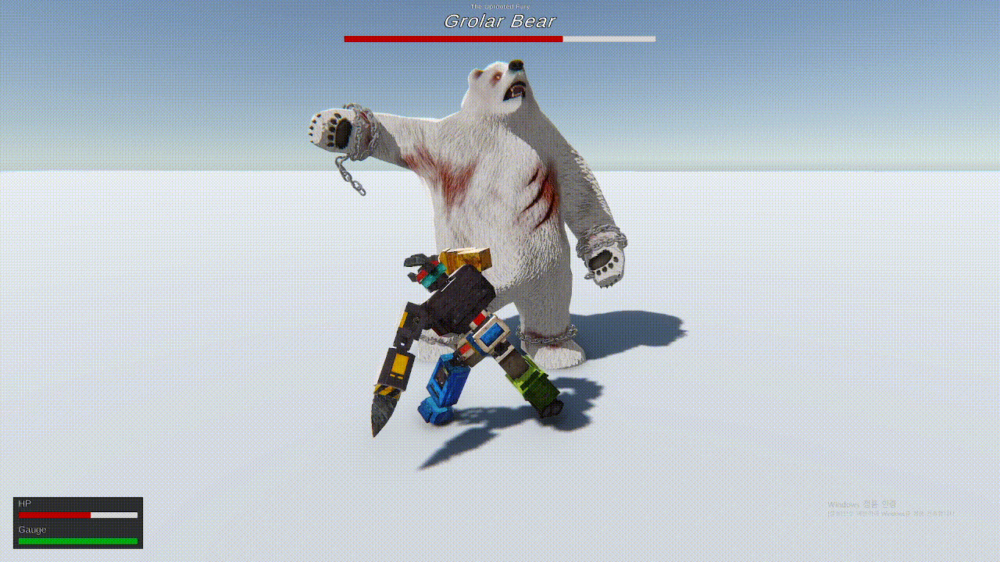
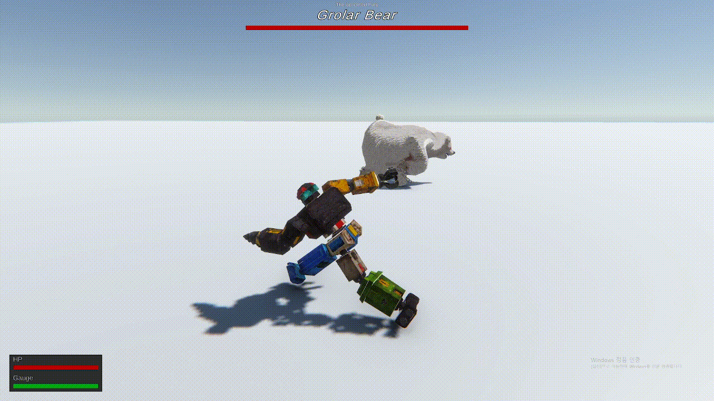
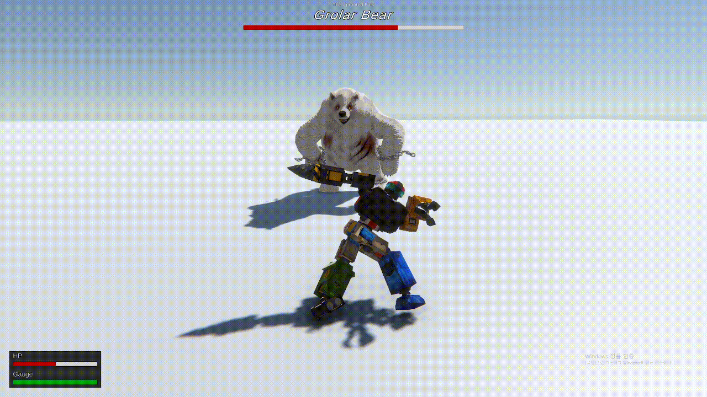
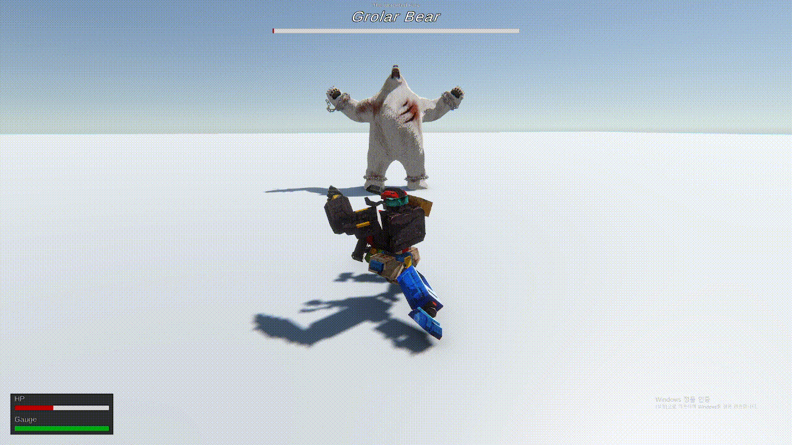

5명이 나눠 조종
중앙부와 사지를 맡은 플레이어들이 동시에 판단해야 움직일 수 있습니다.
5인 협동 메카 액션
“자, 출동이다!” 환경보호 트뢰시맨은 5인 협동 게임으로, 합체 메카의 일부분을 각각 조작하여 도심 한복판에 나타난 괴수를 무찌르는 게임입니다. 멋진 팀워크로 괴수를 물리치고 도시를 지키는 영웅으로 거듭나세요.

서기 2040년— 지구 온난화로 찬란했던 인류의 문명은 명맥을 잃고, 탄소 중립을 실천하던 오직 한 도시만이 인류 최후의 종착역으로 남아 있었다: “뉴 네오 부산”. 하지만 평화는 쉽게 얻어지지 않는 법. 거듭되는 괴수의 습격에 도시는 결국 비장의 카드, “프로젝트 환경보호”를 가동한다.
당신은 친환경전대에 선발되어 인류 최후의 병기 트뢰-시 타이탄을 조종하게 되는데... 다른 멤버들과 호흡을 맞춰 메카를 조종하고, 괴수를 저지해 도시의 평화를 지켜낼 수 있을까요?
지구의 미래는 이제 당신의 손에 달렸다! 악을 무찌르고 도시를 지켜라, 트뢰-시맨!
트뢰-시 타이탄— 당신이 조종할 메카는 중앙부, 왼팔, 오른팔, 왼쪽 다리, 오른쪽 다리까지 총 5개의 제어 기관을 가지고 있습니다. 대원들과 역할을 나누고, 맡은 역할을 완벽하게 수행하세요.


반격을 막고, 공격 적중! 체력을 깎아내기만 해서 끝이 아닙니다. 괴수가 지친 틈을 파고들어, 숨겨둔 비장의 기술로 괴수를 마무리하세요!
중앙부와 사지를 맡은 플레이어들이 동시에 판단해야 움직일 수 있습니다.
공격 타이밍만큼 중요한 것은 팀 전체가 맞춰내는 방어 리듬입니다.
“지금이야말로 기회다! 얘들아, 리싸이클 크래시 준비다!”


